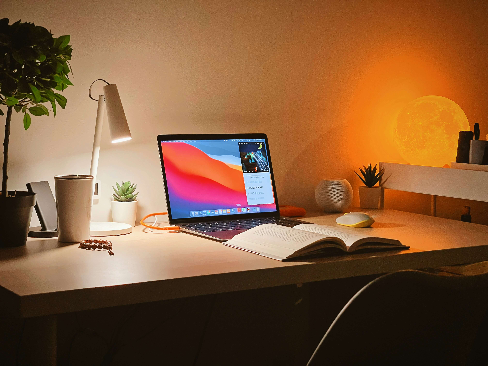

Фритрек и нулевой спринт: Подготовка к работе

Мотивация
Это было самое начало пути. На этом этапе важно было проникнуться основами и настроиться на учёбу. И, возможно, подумать, как новые знания могут повлиять на ваше будущее.
После развития AI я потеряла основной доход художника. Однако мне всегда было интересно программирование, а фронтенд показался наиболее творческим направлением. Мои попытки получить высшее образование в этой сфере не были успешными. Но я решила попробовать другой путь – курс от "Яндекс Практикум".